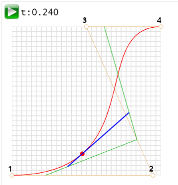
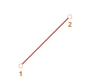
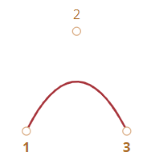
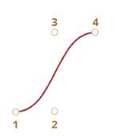

사용한 엔진: Unity
학교 진로시간에 제출한 프로젝트이다.

베지어 곡선은 컴퓨터 그래픽스에서 사용되는 곡선으로 CSS 애니메이션 등에서 도형을 그릴 때 사용한다.
베지어 곡선은 조절점을 사용해서 곡선을 그리게 되는데 여기서 조절점이란 베지어 곡선을 정의하기 위해 필요한 점이다.
베지어 곡선이 그려지는 과정을 보면 매개변수 t(진행도와 비슷한 개념이다)가 0에서 1까지 증가하면서 첫 번째 조절점에서
마지막 조절점까지 그림을 그리는 점이 이동한다. 베지어 곡선의 자세한 원리는 다음과 같다.
1. 조절점이 2개일때

이때는 조절점 1에서 조절점 2까지 직선을 그린다.
t가 증가하면서 조절점1과 조절점2를 t:(1-t)로 내분하는 점이 곧 그림을 그리는 점의 위치가 된다.
2. 조절점이 3개일때

t가 증가하면서 조절점1과 조절점 2사이를 t:(1-t)를 내분하는 점(a), 조절점2와 조절점3 사이를 t:(1-t)로 내분하는 점(b)을 찍고
이 두 a와 b를 다시 t:(1-t)로 내분하는 점이 곧 그림을 그리는 점의 위치가 된다.
3. 조절점이 4개 이상일 때

조절점이 4개일때, 5개일때 혹은 더 많더라도 위의 메커니즘이 반복 적용된다.
즉 각자 숫자의 차가 1인 조절점들 사이의 t:(1-t)를 내분하는 점을 찍고 다시 그 조절점끼리 내분하는 점을 찍는 것을 반복하여
최종적으로 하나의 점의 좌표가 나올 때까지 반복한다.